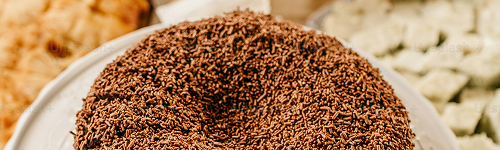

Receita bolo de chocolate
Uma receita simples e deliciosa de bolo de chocolate para fazer em casa.
Ingredientes
1 xicaras de farinha
1 xicara de açucar
1 xicara de chocolate em pó
3 ovos
1 xicara de leite
1 colher de fermento em pó
Modo de Preparo
1 Pré-aqueça o forno a 180°C.
2 Misture os ingredientes secos.
3 Adicione os ovos e o leite.
4 Misture bem até formar uma massa homogênea.
5 Adicione o fermento por último.
6 Coloque em uma forma untada.
7 Asse por aproximadamente 40 minutos.
Informações extras
Tempo de Preparo:50 minutos
Rendimento:8 porções